Menu de navegação
Conteúdo principal
Rodapé
menu
História da
Ditadura
Expandir submenu
Origens do golpe
Períodos da ditadura
Corrupção
Futebol
Militares que disseram NÃO
Civis que disseram SIM
Biografias da ditadura
Biografias da resistência
Contexto
internacional
Expandir submenu
Capitalismo ou comunismo?
América Latina em transe
A Repressão
Expandir submenu
A Repressão
Resistências
Expandir submenu
Panorama da resistência
Partidos políticos
Imprensa alternativa
Indígenas
Igreja
Movimentos Negros
Movimentos de bairro
Mulheres
LGBT
Operários
Trabalhadores rurais
Estudantes
Grupos da luta armada
Educação e
ditadura
Expandir submenu
A educação brasileira antes de 1964
Educação básica
Universidades
Livros sob censura
Arte e
cultura
Expandir submenu
Panorama
Artes plásticas
Cinema
Música
Rádio
Teatro
Televisão
Literatura
Anistia e
Abertura
Expandir submenu
Abertura lenta e anistia parcial
Comissão nacional
da verdade
Expandir submenu
O que são Comissões da Verdade
CNV no Brasil
Comissões da Verdade locais
Experiências internacionais
As recomendações da CNV
Justiça de
Transição
Expandir submenu
O que é Justiça de Transição
Justiça de Transição no Brasil
Violências
de estado
Expandir submenu
Desmilitarização e reforma das polícias
Combate à Tortura
Dignificação do Sistema Prisional
Identidades e
resistências
Expandir submenu
CNV e indígenas
CNV e mulheres
CNV e LGBT
CNV e as lutas por terras
Apoio ao
educador
Expandir submenu
Aos educadores
Sequências Didáticas
Protagonismo dos alunos
Inclua sua proposta
Biografias
da
resistência
Selecione o biografado
Selecione o biografado
Alexandre Vannucchi Leme
Alípio Freire
Ana Rosa Kucinski
Ângelo Arroyo
Apolônio de Carvalho
Aton Fon Filho
Audálio Dantas
Aurora do Nascimento Furtado
Betinho
Carlos Alberto Soares de Freitas
Carlos Lamarca
Carlos Marighella
Celso Furtado
Cid de Queiroz Benjamin
Clara Charf
Cloves de Castro
Criméia de Almeida
Darcy Ribeiro
Devanir José de Carvalho
Dilma Rousseff
Dom Hélder Câmara
Dom Paulo Evaristo Arns
Edmur Péricles Camargo
Edson e Janaína Teles
Edson Luís de Lima Souto
Eduardo Collen Leite
Elson Martins
Fernando Henrique Cardoso
Flavia Inês Schilling
Flávio Tavares
Florestan Fernandes
Francisco Jesus da Paz
Francisco Tenório Jr
Franklin Martins
Frei Tito de Alencar Lima
Gregório Bezerra
Guiomar da Silva Lopes
Helenira Resende de Souza Nazareth
Heleny Telles Ferreira Guariba
Henfil
Henry Sobel
Honestino Monteiro Guimarães
Iara Iavelberg
Inês Etienne Romeu
Iuri e Alex de Paula Xavier Pereira
Ivan Seixas
Jacob Gorender
Jaime Wright
Jane Vanini
Joana Lopes
João Goulart
Joaquim Câmara Ferreira
Joaquinzão
José Carlos Novaes da Mata Machado
José Dirceu
José Ferreira de Almeida
José Ibrahim
José Luiz del Roio
José Roberto Arantes de Almeida
Laura Petit da Silva
Leonel Brizola
Lígia Maria Salgado Nóbrega
Lúcia Murat
Luís Carlos Prestes
Luís Travassos
Luiz Eduardo Merlino
Luiz Eurico Tejera Lisboa
Luiz Inácio Lula da Silva
Madre Maurina
Manoel Cyrillo
Manoel Fiel Filho
Márcio Moreira Alves
Marcos Faerman
Maria Amélia de Almeida Teles
Maria Auxiliadora Lara Barcelos
Miguel Arraes
Millôr Fernandes
Nadir Kfouri
Norberto Nehring
Olavo Hanssen
Osvaldão
Pauline Reichstul
Paulo Freire
Pedro Lobo
Ricardo Zarattini
Rita Sipahi
Rose Nogueira
Rubens Paiva
Ruy César
Santo Dias
Sérgio Carvalho
Sérgio Gomes
Sobral Pinto
Soledad Barret Viedma
Takao Amano
Therezinha Zerbini
Ulysses Guimarães
Virgílio Gomes da Silva
Vladimir Herzog
Vladimir Palmeira
Zuzu Angel
Busque pelo biografado:
Alexandre Vannucchi Leme
Alípio Freire
Ana Rosa Kucinski
Ângelo Arroyo
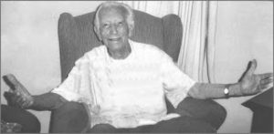
Apolônio de Carvalho
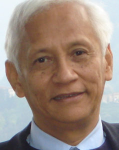
Aton Fon Filho
Audálio Dantas
Aurora do Nascimento Furtado
Betinho
Carlos Alberto Soares de Freitas
Carlos Lamarca
Carlos Marighella
Celso Furtado
Cid de Queiroz Benjamin
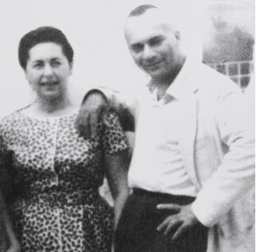
Clara Charf
Cloves de Castro
Criméia de Almeida
Darcy Ribeiro
Devanir José de Carvalho
Dilma Rousseff
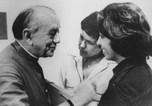
Dom Hélder Câmara
Dom Paulo Evaristo Arns
Edmur Péricles Camargo
Edson e Janaína Teles
Edson Luís de Lima Souto
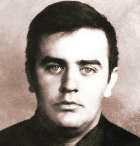
Eduardo Collen Leite
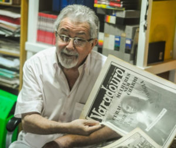
Elson Martins
Fernando Henrique Cardoso
Flavia Inês Schilling
Flávio Tavares
Florestan Fernandes
Francisco Jesus da Paz
Francisco Tenório Jr
Franklin Martins
Frei Tito de Alencar Lima
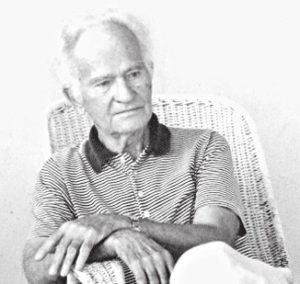
Gregório Bezerra
Guiomar da Silva Lopes
Helenira Resende de Souza Nazareth
Heleny Telles Ferreira Guariba
Henfil
Henry Sobel
Honestino Monteiro Guimarães
Iara Iavelberg
Inês Etienne Romeu
Iuri e Alex de Paula Xavier Pereira
Ivan Seixas
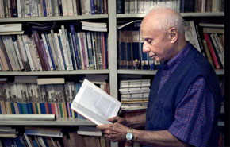
Jacob Gorender
Jaime Wright
Jane Vanini
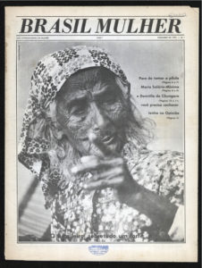
Joana Lopes
João Goulart
Joaquim Câmara Ferreira
Joaquinzão
José Carlos Novaes da Mata Machado
José Dirceu
José Ferreira de Almeida
José Ibrahim
José Luiz del Roio
José Roberto Arantes de Almeida
Laura Petit da Silva
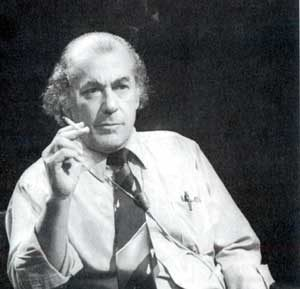
Leonel Brizola
Lígia Maria Salgado Nóbrega
Lúcia Murat
Luís Carlos Prestes
Luís Travassos
Luiz Eduardo Merlino
Luiz Eurico Tejera Lisboa
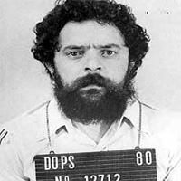
Luiz Inácio Lula da Silva
Madre Maurina
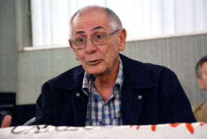
Manoel Cyrillo
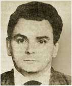
Manoel Fiel Filho
Márcio Moreira Alves
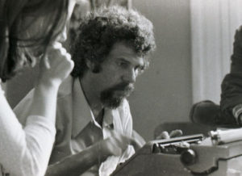
Marcos Faerman
Maria Amélia de Almeida Teles
Maria Auxiliadora Lara Barcelos
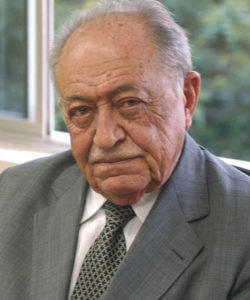
Miguel Arraes
Millôr Fernandes
Nadir Kfouri
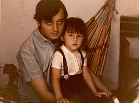
Norberto Nehring
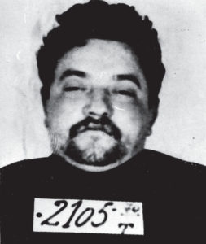
Olavo Hanssen
Osvaldão
Pauline Reichstul
Paulo Freire
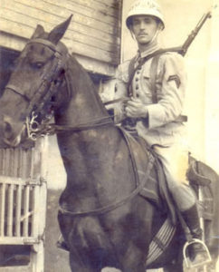
Pedro Lobo
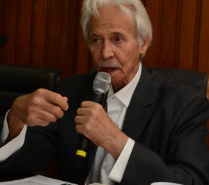
Ricardo Zarattini
Rita Sipahi
Rose Nogueira
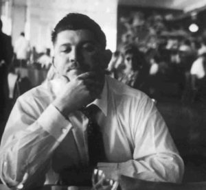
Rubens Paiva
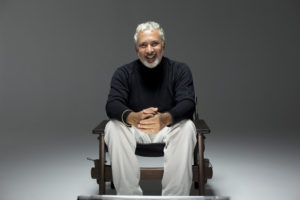
Ruy César
Santo Dias
Sérgio Carvalho
Sérgio Gomes
Sobral Pinto
Soledad Barret Viedma
Takao Amano
Therezinha Zerbini
Ulysses Guimarães
Virgílio Gomes da Silva
Vladimir Herzog
Vladimir Palmeira
Zuzu Angel

 Alexandre Vannucchi Leme
Alexandre Vannucchi Leme Alípio Freire
Alípio Freire Audálio Dantas
Audálio Dantas Cid de Queiroz Benjamin
Cid de Queiroz Benjamin Darcy Ribeiro
Darcy Ribeiro Edson e Janaína Teles
Edson e Janaína Teles Francisco Tenório Jr
Francisco Tenório Jr Iuri e Alex de Paula Xavier Pereira
Iuri e Alex de Paula Xavier Pereira Jane Vanini
Jane Vanini Joaquim Câmara Ferreira
Joaquim Câmara Ferreira Joaquinzão
Joaquinzão José Dirceu
José Dirceu José Ferreira de Almeida
José Ferreira de Almeida José Ibrahim
José Ibrahim José Roberto Arantes de Almeida
José Roberto Arantes de Almeida Luís Carlos Prestes
Luís Carlos Prestes Márcio Moreira Alves
Márcio Moreira Alves Nadir Kfouri
Nadir Kfouri Osvaldão
Osvaldão Sérgio Gomes
Sérgio Gomes Virgílio Gomes da Silva
Virgílio Gomes da Silva Vladimir Herzog
Vladimir Herzog